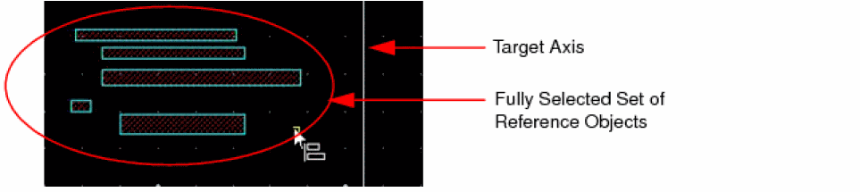
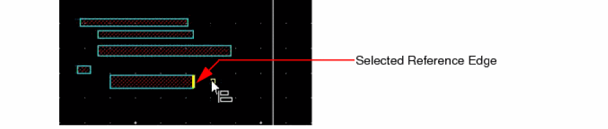
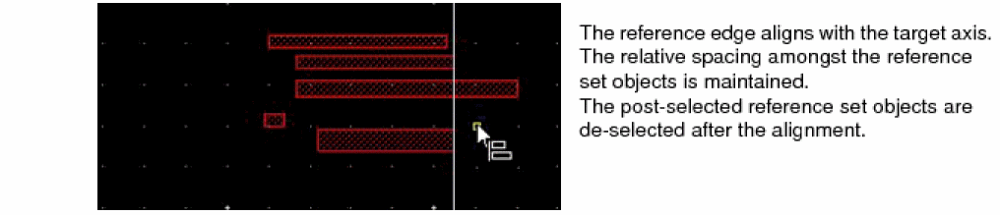
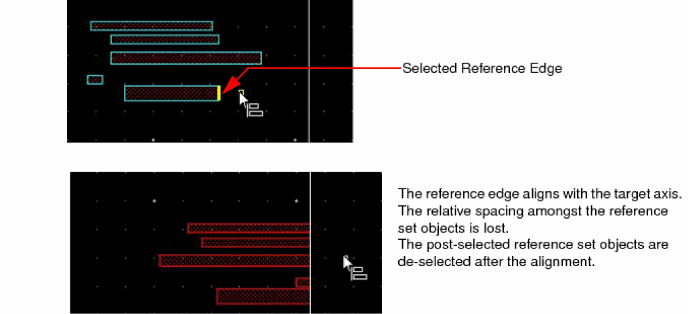
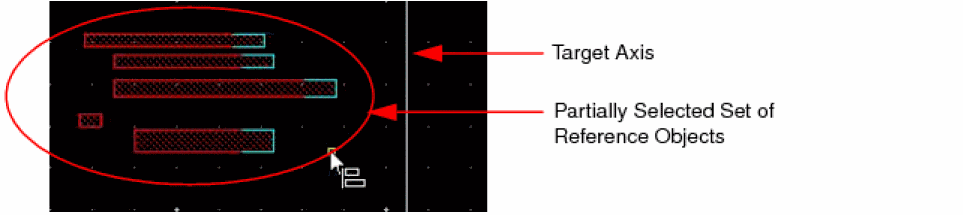
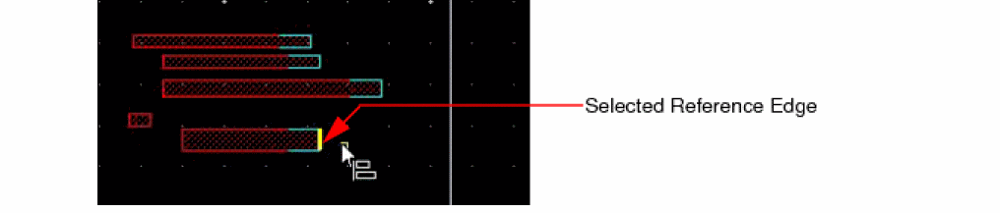
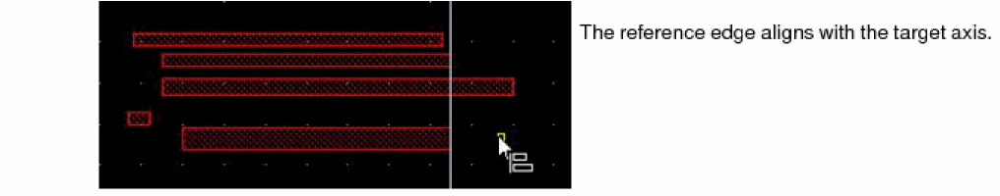
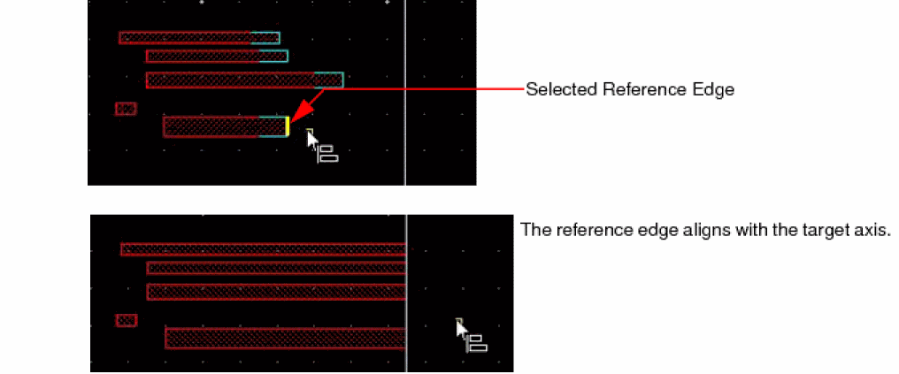

Aligning Objects with a Target Axis
The support for aligning objects in a reference set to a target axis is available only in post-selection mode. You can align the selected objects using full or partial selection.
Aligning Objects with a Target Axis in Full Selection Mode
Aligning Objects with a Target Axis in Partial Selection Mode
Aligning Objects with a Target Axis in Full Selection Mode
To align objects in a reference set with a target axis in full selection mode:
-
On the Options toolbar in the layout window, ensure that the Full Select button
is on. If not, press
F4to enable it. - Select Edit – Quick Align to start the Quick Align command.
- Right-click on the canvas and select Vertical or Horizontal from the Target Axis submenu on the Quick Align shortcut menu.
- Click on the canvas to place the target axis.
-
Select the reference set objects.
 -
Move the pointer around the selected reference set.
The potential points, edges, and centerlines in the objects in the reference set are highlighted. By default, points, edges, and centerlines are highlighted. To highlight only the edges and centerlines, right-click on the canvas and select Snap to Edges from the Quick Align shortcut menu. -
Do one of the following to align the reference set with the target axis:
-
Click to select a reference edge, centerline, or point.
The object with the reference edge moves to align with the target axis. All the objects in the reference set move by the same distance. The relative spacing amongst the reference set objects is maintained. -
Double-click to select a reference edge, centerline, or point.
The object with the reference edge moves to align with the target axis. All the objects in the reference set move by varying distances to align with the target axis, as the reference edge. The relative spacing amongst the reference set objects is lost.
-
Click to select a reference edge, centerline, or point.
Aligning Objects with a Target Axis in Partial Selection Mode
To align objects in a reference set with a target axis in partial selection mode:
-
On the Options toolbar in the layout window, ensure that the Partial Select button
is on. If not, press
F4to enable it. - Select Edit – Quick Align to start the Quick Align command.
- Right-click on the canvas and select Vertical or Horizontal from the Target Axis submenu on the Quick Align shortcut menu.
- Click on the canvas to place the target axis.
-
Partially select the set of reference objects. Use
Shift+ click to add to the selection andCtrl+ click to remove from the selection.
 -
On the canvas, move the pointer around the selected reference set.
The potential points, edges, and centerlines in the objects in the reference set highlight. By default, points, edges, and centerlines highlight. To highlight only the edges and centerlines, right-click and select Snap to Edges from the Quick Align shortcut menu. -
Do one of the following to align the reference set with the target axis:
-
Click to select a reference edge, centerline, or point.
The object with the reference edge stretches to align with the target axis. All the objects in the reference set stretch by the same amount. The relative spacing amongst the reference set objects is maintained.The post-selected reference set objects are deselected after the alignment. -
Double-click to select a reference edge, centerline, or point.
The object with the reference edge stretches to align with the target axis. All the objects in the reference set stretch by varying amounts to align with the target axis, as the reference edge. The relative spacing amongst the reference set objects is lost.The post-selected reference set objects are deselected after the alignment.
-
Click to select a reference edge, centerline, or point.
Related Topics
Object Alignment by Using the Quick Align Command
Return to top